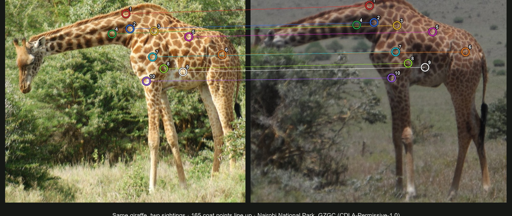

How this relates to your work
Your mission
Hermeus builds high-speed autonomous aircraft with the Department of War; its BD analyst runs the Growth team's pipeline, briefings and government research (posting read 7 Nov 2026).
What stood out
The posting asks for analysis of "DoD budget data, congressional hearings, think tank reports, and legislation" to guide the Growth team.
Where my systems map
- OSINT screens: Open sources into a short call: 112,416 NASA fire detections in Darfur against a 2018–22 mean of 90,282, with the caveat first.
- Forecasts: 10 scored forecasts from one 2023 course, mean Brier 0.14.
- Draft agent: Pipeline status you can trust: OK now requires a real draft quote after 3 of 4 runs were mislabeled.
My assessment
My assessment: as the services buy more autonomous systems in FY27, competition will shift to who can show test evidence fastest, so BD briefings will lean on flight-test data. This is my inference from your posting, not inside knowledge.
Sources: Business Development Analyst posting, Hermeus (read 7 Nov 2026)
myersmail9@gmail.comJoseph Myers
Applied AI: production agents, evaluation, computer vision, geospatial.
AI that does real work, gets checked, and leaves the big decisions to people. I build with Claude Code.
myersmail9@gmail.comTap a figure for its source and limits. Nobody outside has audited these. Check my claims
What I've built
- Draft agentA field recording becomes a draft quote in about a minute.Live, used, supervised
- Company memory2,490 facts, each tied to its source.Live, adoption unproven
- Giraffe re-identificationRanks likely matches. A person decides almost every case.Field pilot
- OSINT screensSatellite fire counts against a pre-war baseline, caveats first.Concept, public data
- Reporting assistantThe model routes, code does the math.Concept, public data
- Permissions1 of 7 tools can write, and it only creates drafts.Production boundary
- Utility locatesFour views reconciled. A person files every form.Live, used, decision support
- BriefingsA private page per estimator, rebuilt when the schedule moves.Live, used
- Forecast log10 resolved forecasts, logged and scored.Ongoing
Experience
Applied AI builder, private company
Logan, Utah · 2026 to present
- 13 workflows and apps live and used for real work, some plain software rather than AI at runtime. System map
- A bid agent with 151 recorded runs and failures on the record. Its tools read or create drafts; a person prices and sends.
- A company memory of 2,490 sourced facts, with a nightly test that blocks a worse search index. Adoption isn't proven.
CEO, refugee NGO (unpaid)
Remote from Utah, programs in Herat · 2022 to 2023
- Literacy and vocational programs for 500+ students a year, including children, women and mothers, with 15 staff. Check this
- Local managers did all the in-person work, and I would have failed without them.
Public-data analysis and builds
Independent
- A Darfur fire screen, an Etosha fire timeline, giraffe matching and a reporting assistant, all on public data.
- Forecasts logged and scored from my CAI 4300 class.
Mission service
Botswana, Namibia and South Africa · Nearly two years
Education and tools
- Education
- International Studies, Utah State University. Minor in Anticipatory Intelligence. Certificate in Global Peacebuilding.
- Tools and methods
- Claude Code · MCP · GraphQL · OAuth 2.0 · hybrid search and reranking · golden-set evaluation · computer vision · NASA FIRMS, Sentinel, AIS, OpenStreetMap · Brier-scored forecasting.
Screens whose numbers get re-derived by script
- Problem
- Raw satellite fire counts get misread as attacks.
- Solution
- Compare against a pre-war baseline, lead with caveats, and re-derive every number by script.
See the demo and proof
- Concept demos, not operational products. A signal is a lead, never a conclusion.
Check Darfur · Check Etosha · Full pages: Darfur, Etosha.
Forecasts, logged and scored
- Problem
- Judgment that's never scored never improves.
- Solution
- Log every forecast with its base rate and dated updates, then score it.
See the forecasts
Check the score · My forecast log, shared on request.
A field recording becomes a draft quote in about a minute
- Problem
- Estimators rebuilt every quote by hand after each property walk.
- Solution
- Record the walk once. An agent maps it to the service catalog, creates a draft, then reads it back. A person prices and sends.
See the demo and proof
00:41 ok so uh, big silver maple out front, I'd say thirty inch maybe… 01:12 she's worried about the, two dead leaders over the garage, yeah those come out 02:05 bucket truck fits in the driveway so no climb 02:40 and grind that stump by the fence, eighteen inch-ish 03:05 chips, she hasn't decided, ask her later
- Execution metrics, not an ROI study.
- The agent never prices or sends; that is by design.
Check the run count · Check the tool limits · Run log and live test battery, private.
A company memory that knows where every fact came from
- Problem
- Expert pricing and field judgment lived in one person's head.
- Solution
- Atomic facts with source, confidence, effective dates and replacement history. Answers cite a fact or say “I don't have that.”
See the demo and proof
- Adoption isn't proven: one recent week logged zero crew questions, and 6 of 7 sampled answers failed a quality check.
- Golden set came from the same transcripts, not real user questions.
Check the test score · Check the nightly test · Evaluation files, private.
Which giraffe is this?
- Problem
- Researchers match giraffes by eye across thousands of field photos.
- Solution
- Rank likely matches with calibrated confidence. A person decides almost every case.
See the demo and proof

- Measured on public datasets, not yet on the partner's own animals.
- Night infrared untested.
Check the main test · Check the earlier split · Public dataset: GZGC, Nairobi National Park, 2015.
The model routes, code does the math
- Problem
- Language models make up numbers.
- Solution
- The model only picks the tool. Code computes every number and links it to its source rows.
See the demo and proof
| ID | Month | Type | Activity | Status | Area m² |
|---|---|---|---|---|---|
| 1093 | 2026-07 | Areas | MDD | Approved | 345,037 |
| 1094 | 2026-07 | Areas | MDR | Approved | 495,571 |
| 1095 | 2026-07 | Areas | TSD | Approved | 492,100 |
| 1096 | 2026-07 | Items | MDR | Approved | 0 |
| 1101 | 2026-08 | Areas | MDD | Approved | 258,778 |
| 1102 | 2026-08 | Areas | MDR | Approved | 428,918 |
| 1103 | 2026-08 | Areas | TSD | Approved | 452,500 |
| 1104 | 2026-08 | Items | MDR | Approved | 0 |
| 1111 | 2026-09 | Areas | MDR | Approved | 455,723 |
Check the release test · Public source data, private test.
The agent can only do what its tools allow
- Problem
- An agent with general write access can do real damage.
- Solution
- Default-deny. Six read tools and one write: create a draft. No general mutation tool exists.
Try the permissions demo
Check the tool limits · Connector configuration, private.
Utility locates: four views reconciled, never one field trusted
- Problem
- Digging without a valid locate ticket is a safety and legal risk, and the ticket field is often blank or stale.
- Solution
- Cross-check four independent records plus email before calling anything covered. A person submits every legal form.
See the scan
- Supports compliance work; doesn't guarantee it. A person is legally responsible and submits every form.
Check the scan · Scan log, private.
Every stop briefed before the knock
- Problem
- Estimators walked up to doors without the call, the history or what was charged last time.
- Solution
- A private daily page per estimator, rebuilt automatically when the schedule moves.
See the replay
Two maples thinned, worried about the roofline.
Called twice. Prefers text. Dog in back yard.
2024 · crown clean, 2 trees · $▇▇▇
Cited company fact F-1187
Watcher event log, 4 Nov 2026. One event, on a short production history.
System map · labelled by what's actually true
See every system and its label
- Walkthrough → draft quote agent
- Daily estimator briefings
- Structured phone intake
- Online request triage
- Multi-channel ops inbox
- Customer dossiers + grounded replies
- Visit confirmation + safe reschedule
- Utility-locate surveillance
- Locate form staging + recording
- Bounced-email recovery (narrow)
- Review analysis + crew credit
- Crew mobile app (51 supervisor tiles)
- Field logistics app
- Ask-the-expert knowledge base
- Supervisor decision board
- Calculators and training pages
- Guarded self-improvement
- Office connector for a chat assistant
- Route-aware bid scheduling
- Next-gen logistics app
- Orchestrator live board
- 4 earlier tools, replaced
Check the count · Built for a private company. Names, customers and prices stay private; structure and measured results are shown.
Built work on public data
Real outputs. Tap one to enlarge.
See three more
Check my claims
Most of these numbers are real but narrow. Tap a row for what it measures, how you can check it, and where it falls short.
Biggest limit: nobody outside has audited this. The checks were run by me and by AI sessions I direct. Only two rows rest entirely on public data you can recount yourself, and my check scripts for them are private.
151Bid agent runs: 119 succeeded, 22 stopped, 10 failed
- What it measures
- Every recorded run of the agent that turns a recorded site walk into a draft quote, as of 5 Nov 2026. Under the rule I set, a run counts as succeeded only if a draft quote was created.
- Source
- Run log and a live test battery from 26 Oct. Private, because it holds customer data.
- How to check it
- I can walk you through the log on a call with customer details removed.
- Where it falls short
- A live test battery ran on 26 Oct, so some runs are likely tests and this is not 151 jobs. It doesn't measure quote quality or time saved. An earlier version graded its own runs and mislabeled 3 of 4, so I changed the rule.
- Confidence
- The number: High. What it means: Moderate.
- What would change my mind
- Estimators reporting that drafts take as long to fix as writing the quote from scratch.
- Standard used
- Mapped by me to NIST AI RMF 1.0 (Measure). ICD 206-style source descriptor.
462 / 481Company memory: right fact in the top 12 search results (Oct 2026)
- What it measures
- Whether search finds the right fact. The memory held 2,173 facts at this test and holds 2,490 now; I have no rerun on the larger set. In Sep 2026 it was 95.7% of 352 questions.
- Source
- Evaluation files and a knowledge-base state report, Sep–Nov 2026. Private.
- How to check it
- I can show the question set and results on a call.
- Where it falls short
- The test questions come from the same transcripts as the facts, which makes it easier than real use. It tests search, not the written answer. One recent week had zero answers, and 6 of 7 sampled answers failed a quality check.
- Confidence
- The number: High. What it means: Low.
- What would change my mind
- Scoring well on questions from crew members that it has never seen.
- Standard used
- Mapped by me to NIST AI RMF 1.0 (Measure). In-house regression test.
3 nightsNightly test held back a bad search index until 40 outdated facts were fixed
- What it measures
- A new index can't go live if it misses a question the live one got right.
- Source
- Gate logs and evaluation files, Sep–Oct 2026. Private.
- How to check it
- I can show the logs on a call.
- Where it falls short
- It guards the search index only, and the rest of the platform has no equivalent automated test. This is one documented episode, not a track record.
- Confidence
- The number: High. What it means: Moderate.
- What would change my mind
- A bad index getting through the test and being found later.
- Standard used
- In-house rule: nothing ships if it gets worse.
1 of 7Connector tools that can write, and it only creates drafts
- What it measures
- The hosted connector has six read tools and one that creates a draft quote. None can price, send, invoice or delete.
- Source
- Connector configuration. Private.
- How to check it
- The demo on this page shows the behavior. It uses sample content, not the live system.
- Where it falls short
- This covers one connector. Other apps have their own, wider access, including a crew app with 51 tiles for supervisors. Nobody outside has tested it.
- Confidence
- The number: High. What it means: Moderate.
- What would change my mind
- An outside reviewer getting the agent to change something it shouldn't.
- Standard used
- Least privilege, the idea in NIST SP 800-53 AC-6. Not audited against it.
13Workflows and apps live and used for real work (Nov 2026)
- What it measures
- My own count from my own maturity list. The system map on this page shows the labels.
- Source
- My systems write-up, 5 Nov 2026. Private.
- How to check it
- The system map on this page lists each one. I can walk through them on a call.
- Where it falls short
- Some are plain software, not AI at runtime. “Live” does not mean widely adopted. Others are unproven, in preview or in test.
- Confidence
- The number: Moderate. What it means: Moderate.
- What would change my mind
- Usage logs showing that a “live” system has stopped being used.
- Standard used
- In-house maturity labels.
174Active jobs reconciled in one morning scan, 14 of them digging jobs
- What it measures
- One scan on 5 Nov 2026 cross-checking four records plus email before calling a job covered.
- Source
- Scan log. Private.
- How to check it
- I can show the log on a call with customer details removed.
- Where it falls short
- This is one morning, and no unexplained reconciliation difference is the scan's own report. It flags disagreements and a person still files every form.
- Confidence
- The number: High. What it means: Moderate.
- What would change my mind
- A job it called covered turning out not to be.
- Standard used
- ICD 206-style source descriptor. In-house reconciliation rule.
31 / 52Right giraffe ranked first on another survey team's photos (60%)
- What it measures
- A different team's photos against the existing catalog, frozen matcher, scored once. First suggestion 60% (95% CI 46–72). Top 5: 38 of 52, 73% (60–83). Detection: 74 of 77 giraffes (89–99).
- Source
- Public dataset (GZGC, Nairobi National Park, 2015). Evaluation files are private.
- How to check it
- The dataset is public. I can share the evaluation files on request.
- Where it falls short
- Same park and same survey. The camera clocks disagree, so the gap may be hours, not a day. Top-1 and top-5 were computed after the run from its saved candidates. Only 2 auto-filings, so there's no error rate. 38 of 61 returning giraffes were called “new?”, so that signal isn't reliable. Not tested on partner animals.
- Confidence
- The number: High. What it means: Moderate.
- What would change my mind
- A true multi-season test on animals it has never seen.
- Standard used
- Added after first results, logged as a deviation, scored once. No pass mark of its own: the original targets (top-1 at least 75%, new animals at least 80%) were set for the earlier split, and this test is below both. Wilson intervals, treating sightings as independent, so the true range is somewhat wider. TRIPOD+AI not yet applied.
0 / 32Wrong automatic giraffe matches on an earlier split
- What it measures
- Matches the tool filed without a person, on the pre-registered split.
- Source
- Same public dataset and private evaluation files.
- How to check it
- I can share the evaluation files on request.
- Where it falls short
- Not a clean test. 29 of 32 had a near-duplicate photo seconds apart, and the matcher was revised after first results. I'd give it little weight.
- Confidence
- The number: High. What it means: Low.
- What would change my mind
- It's already weak. Trust the row above instead.
- Standard used
- Pre-registration, with deviations logged. This rerun does not meet it as an untouched test.
112,416NASA fire detections in Darfur vs a 90,282 baseline (+24.5%)
- What it measures
- Detections 15 Apr 2023 – 31 Dec 2024 against the 2018–22 mean for the same calendar days. Baseline years ran 82,740–105,165. Within 1 km of a mapped settlement: 3,086 vs 1,869.
- Source
- NASA FIRMS and OpenStreetMap, both public.
- How to check it
- Open the full page. Its method and data are embedded.
- Where it falls short
- Fires are not attacks. This can't say who set a fire or why. Only 2.7% of detections were near a mapped settlement, and low-confidence detections are included. No ground truth.
- Confidence
- The number: High. What it means: Low.
- What would change my mind
- Field reports or imagery that don't line up with the spikes.
- Standard used
- ICD 203 style: facts kept apart from assessment. Caveat first is my own rule. ICD 206-style sourcing.
73Automated re-checks passed on the Etosha fire timeline
- What it measures
- A script re-derives the page's numbers from live sources and compares file hashes. All 73 passed on 8 Oct 2026.
- Source
- NOAA eFire, NASA FIRMS, Sentinel-2, OpenStreetMap and a published investigation.
- How to check it
- Open the full page. I can share the check file on request.
- Where it falls short
- It proves my numbers match the sources, not what caused the fires. The dates are “consistent with” the investigation, never confirmed. I built the checks with Claude Code, so they aren't independent. I spent part of my mission in Namibia, but this work used public data from a desk.
- Confidence
- The number: High. What it means: Moderate.
- What would change my mind
- An independent recount that disagrees.
- Standard used
- ICD 203 style. “Consistent with”, never “confirmed”, is my own wording rule. ICD 206-style sourcing.
19 / 19Questions the reporting assistant had to refuse, refused (Oct 2026)
- What it measures
- A release test of 57 answerable and 19 must-refuse questions on a demining NGO's public monthly data. Tool choice 96%, numbers 100%.
- Source
- Release record, 15 Oct 2026. Public source data, private test.
- How to check it
- The demo on this page shows it. I can share the release record on request.
- Where it falls short
- I built the test with Claude Code, so it isn't independent. The run used gpt-5-mini, not Claude. Earlier versions missed some, so this isn't a first-try score. It's a concept, and nobody uses it for real reporting.
- Confidence
- The number: High. What it means: Moderate.
- What would change my mind
- Someone else's question set getting a made-up number out of it.
- Standard used
- IMAS 07.12 §17.7, used as the release rule: if there's any doubt, it isn't released.
0.14Mean Brier score on 10 resolved forecasts (lower is better)
- What it measures
- Final forecasts on 7 questions from my CAI 4300 class in 2023, one split into 4 time bins.
- Source
- My forecast log, entered after the course from my class work.
- How to check it
- The demo on this page steps through the updates. I can share the log.
- Where it falls short
- A flat 20% on the same outcomes scores 0.16, so this is barely better than a base rate. On all 4 questions with a logged crowd figure, the crowd was closer. On one I said 52% and the crowd said 6%. Ten is a small sample.
- Confidence
- The number: High. What it means: Low.
- What would change my mind
- It's a weak claim now. A larger scored record could raise it or lower it.
- Standard used
- Brier score on a 0–1 scale (0.25 is always saying 50%). Questions came from Good Judgment Open through CAI 4300, but GJ Open scores 0–2 and averages daily, so don't compare directly.
500+Students a year in Herat, with 15 staff, run remotely as an unpaid NGO CEO
- What it measures
- Literacy and vocational programs for children, women and mothers, 2022–23.
- Source
- NGO records and my own account. Sources disagree on some wording, so I use the broader “students”.
- How to check it
- References on request. I keep details about people and exact locations off this public page for their safety.
- Where it falls short
- I was in Utah. Local managers did all the in-person work, and I would have failed without them. These numbers aren't audited.
- Confidence
- The number: Moderate. What it means: Moderate.
- What would change my mind
- NGO records that show different numbers.
- Standard used
- ICD 206-style source descriptor. Nothing here is independently checkable.
Corrections I've made
- Two giraffe tests were merged into one claim. They're now separate rows, and the clean test comes first.
- “73 of 73 dates” overstated the Etosha check. It's 73 automated re-checks. The dates are “consistent with” the investigation.
- “22 stopped on purpose” went beyond the log. It now says “22 stopped”.
- Top-1 was 30 of 52 in an early hand count that mixed two runs. 31 of 52 is the reproducible figure.
- “0 of 32” was the headline and called pre-registered. It no longer leads, and it's labeled not a clean test.
- “Checks itself” described the agents. An agent graded itself wrong, so the site now says the work gets checked.
Confidence is listed twice because a number can be exact and still say little. Drafted with Claude from my source files.
The standards I chose, and where I fall short of them
I picked the ones marked Chosen for this work. AI helped me find and apply them, and suggested the others. Status is my own assessment unless it names a check.
See each standard and its status
| Standard | What it governs | Where | Status | Standing |
|---|---|---|---|---|
| ICD 203 styleAnalytic tradecraft from ODNI | Facts kept apart from judgment, confidence stated, sources named, limits beside results. | Every claim in the ledger, Darfur and Etosha caveats. | Partly. I apply it by hand and nobody outside has reviewed it. It's an intelligence community directive, so this is its style, not compliance. One tradecraft standard, analysis of alternatives, isn't done across the ledger. “What would change my mind” is near it but isn't it. | Chosen |
| NIST AI RMF 1.0AI risk framework, voluntary | Govern, Map, Measure and Manage for the AI work. | The risk map below, and the ledger's Measure rows. | Self-assessed. Not a certification. | Proposed |
| My resume standardIn-house, 10-item audit, pass at 17 of 20 with no zeros | How the resume is written, formatted and audited. Every number needs a source I can explain. | The PDF resume. | Round 1 failed at 11 of 20. Round 2 failed at 14 of 20. The numbers file isn't written yet. | Chosen |
| WCAG 2.2 AA + USWDSW3C accessibility guidelines, US Web Design System tokens | Contrast, keyboard use, labels and color. | This site. | Targeted. Automated axe-core scan, 6 Nov 2026: 0 violations in light and dark, at phone and desktop widths, with every section open. Automated scans catch only part of WCAG, and nobody outside has tested it. | Chosen |
| ICD 206 styleSource descriptors from ODNI | Says what kind of record each number came from when the raw log stays private. | Source field in the ledger. | Used in style only. | Also used |
| NIST SP 800-53 AC-6Least privilege | Tools get only the access they need. | The hosted connector. | The idea only. Not audited against it. | Also used |
| TRIPOD+AIAI evaluation reporting checklist, 2024 | How the giraffe test should be reported. | Planned for the next giraffe results note. | Not done yet. No item-by-item checklist exists. The evaluation files cover some of the same ground. It was also written for clinical models, so it would need adapting. | Not yet applied |
| Pre-registration + Wilson intervalsTargets set before scoring, with honest error bars | Giraffe test design and reporting. | Giraffe rows in the ledger. | Deviations are logged. The 31 of 52 test was added after first results, and the 0 of 32 rerun doesn't count as untouched. | Also used |
| Brier scoreForecast scoring rule | Scores my forecasts. | Forecast row in the ledger. | Computed by script from my log, on a 0–1 scale. | Also used |
| IMAS 07.12 §17.7Mine action standard, used as a release rule | Mine action products: if there's any doubt about conformity, it isn't released. I borrow the rule for figures. | Reporting assistant release test. | Borrowed as a rule. The assistant is a concept. | Also used |
| OPM federal resume rulesTwo-page limit and month-and-year dates | Resume length and format. | The PDF resume. | Borrowed. Two pages and dates met. Hours per week aren't complete. | Also used |
See the NIST AI RMF risk map
A person owns decisions that matter: an estimator prices and sends every quote, and a person files every legal form.
Gap: Nobody outside reviews this work.
Each system has a written purpose and a label for what's true about it. See the system map.
Gap: Most systems have no one-page risk map of their own. This one covers the whole body of work.
Golden-set tests, a frozen run on another team's photos, and confidence intervals on the giraffe results.
Gap: Company memory tests measure search, not answers, and use questions from its own transcripts.
Tools deny by default, a nightly test blocks a worse search index, and corrections are logged on this page.
Gap: The rest of the company platform has no equivalent automated test.
About
During university I had a traumatic brain injury and had to relearn walking, talking, driving, even how to move my eyes together. I taught myself neuroscience to do it. That's where my problem-solving comes from: if something's broken, I figure out how the system works and rebuild it.
International Studies, Utah State · Global Peacebuilding certificate · Anticipatory Intelligence minor. CEO of a refugee NGO running a school for girls in Herat, unpaid, working remotely from Utah through local managers. Nearly two years in Botswana, Namibia and South Africa. Logan, Utah. US citizen.
How this page is built
Analytic standards: written in the style of ODNI ICD 203, not reviewed against it. Facts are separated from assessments, uncertainty is stated, and each section carries a confidence level with its source. Confidence: High = direct system logs or eval files; Moderate = real data with small samples or known gaps.
- [1] Production run log, 151 runs, 23 Sep – 4 Nov 2026; [2] live test battery record, 26 Oct · High confidence
- [8] Eval files on public datasets, with a pre-registration and logged deviations (GZGC Nairobi, CDLA-Permissive-1.0; Snapshot Serengeti). Not yet tested on partner animals. · Moderate confidence
- [4] Knowledge-base state report, 5 Nov 2026; [5] golden-set eval files, Sep–Oct 2026. Adoption evidence is weak. · Moderate confidence
- [9] verify.py outputs against NASA FIRMS, Global Fishing Watch, Sentinel-1 public archives · High confidence
- [3] Watcher event log, 4 Nov 2026 (single event; short production history) · High confidence
- [7] Locate scan log, 5 Nov 2026 (one morning) · High confidence
- [6] MCP connector source and tool manifest · High confidence
- [10] 82-question eval and 255-question stress test files · High confidence
- [11] Forecast casebook, 28 logged / 10 resolved. Small sample. · Moderate confidence
Sourcing: numbered source descriptors in the style of ICD 206. Raw logs stay private; the descriptors say what kind of record each number came from.
Design: U.S. Web Design System color tokens and Public Sans. Targeting WCAG 2.2 AA; see the standards section for status. Built with Claude Code.
Numbers come from my own logs and evaluation files. Demos marked “sample content” use invented examples; employer and partner data stays private.
Contact
Email is the best way to reach me. Full resume on request.